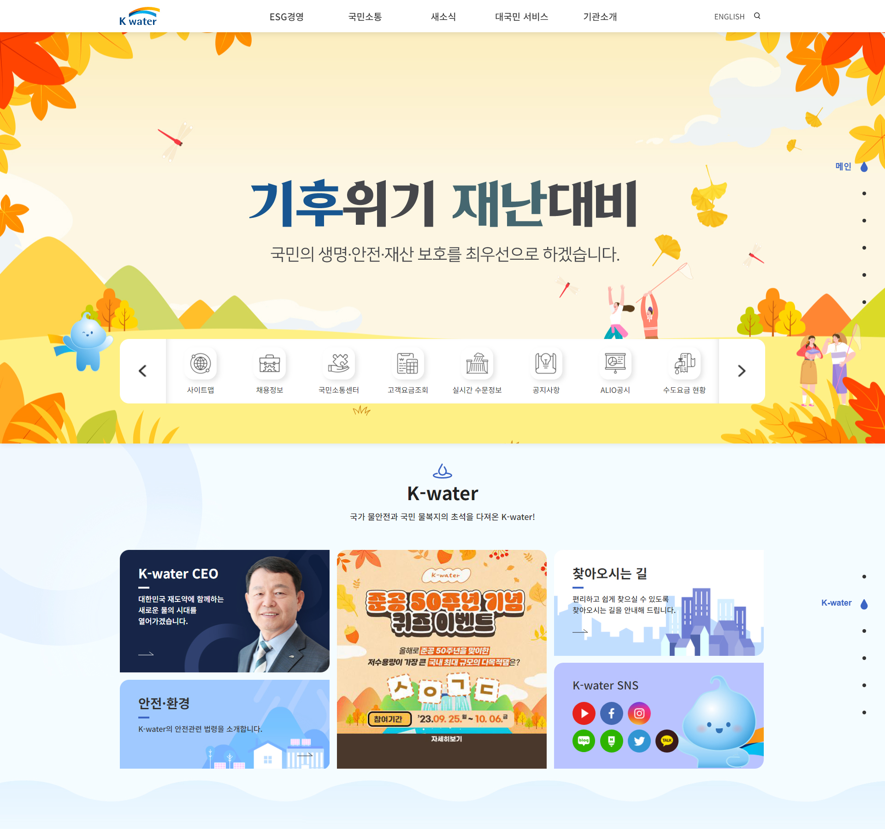
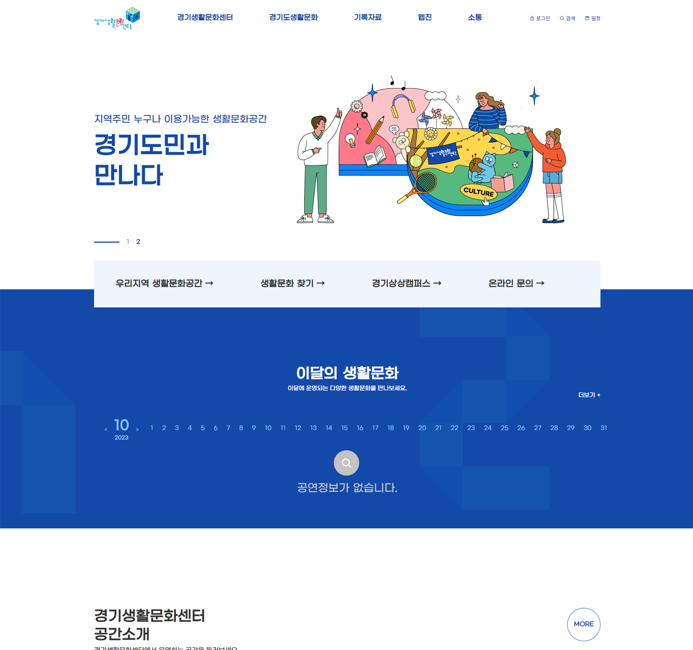
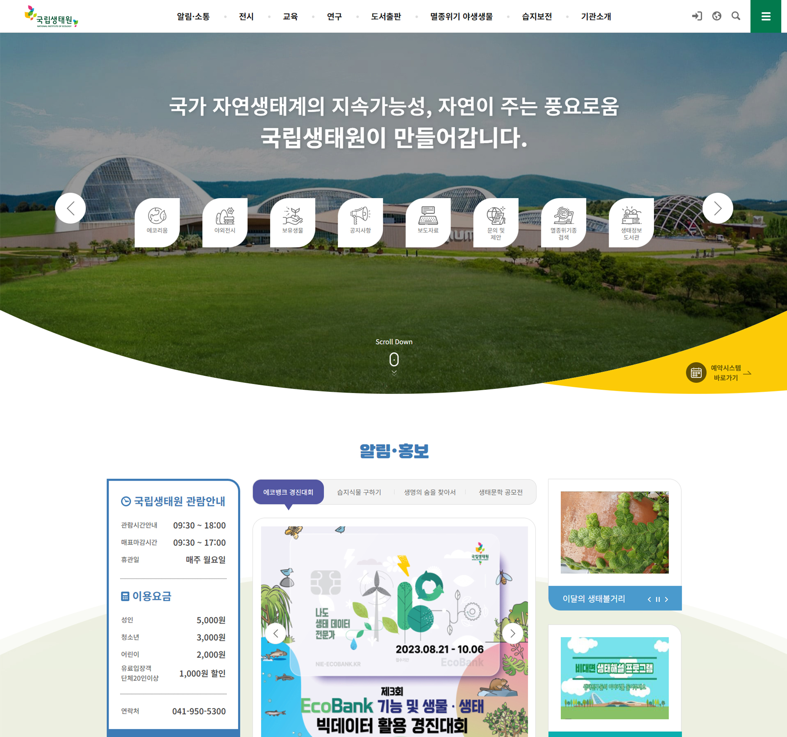
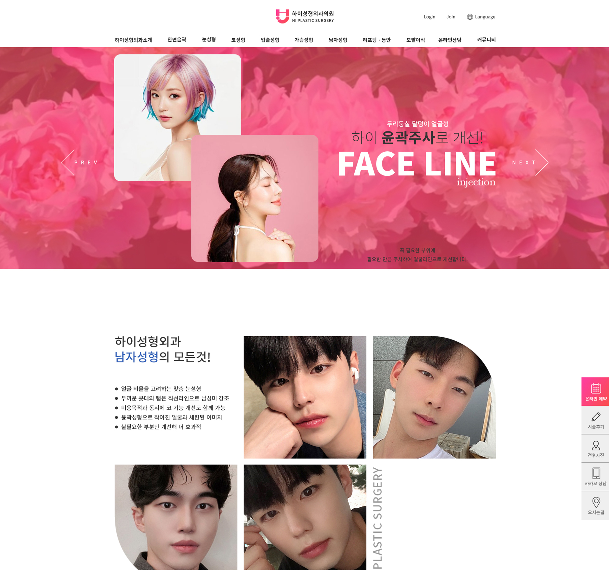
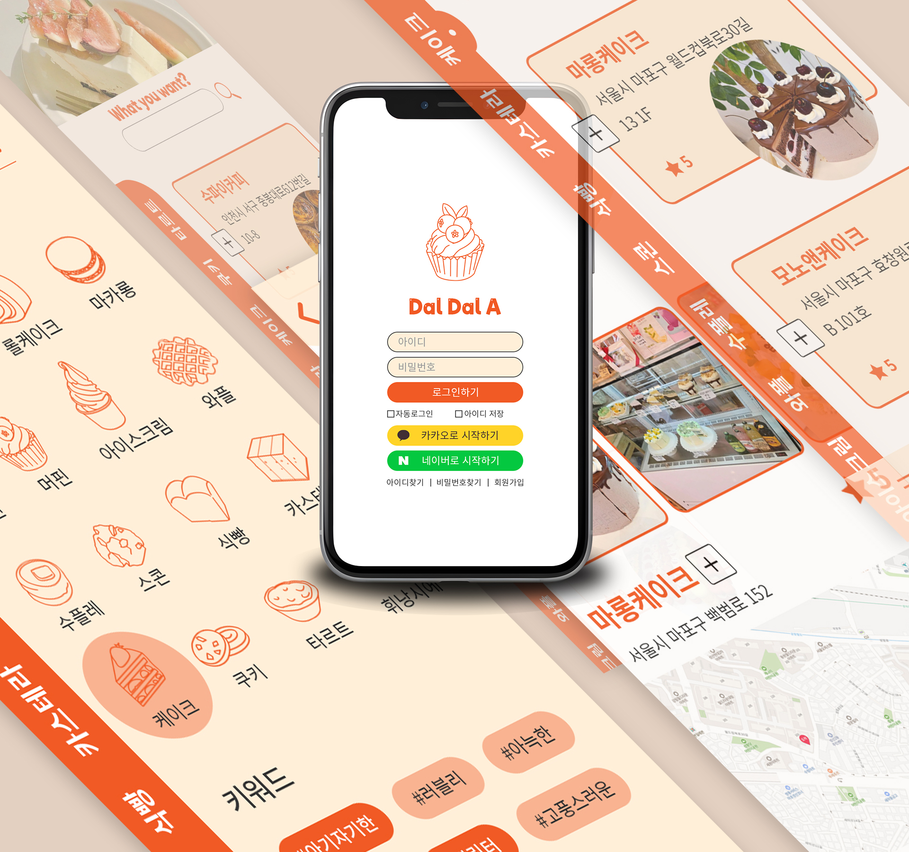

포트폴리오
-
Web Publishing(반응형)
K-water(한국수자원센터)
현존하는 사이트를 나만의 코드로 재구현한 작업입니다. 웹 뿐만 아니라 모바일까지 고려한 반응형 사이트입니다.
View website View ProcessDesign 0% HTML/CSS 100% JQuery 70% 참여도 개인, 100% -
Web Publishing(반응형)
경기생활문화센터
현존하는 사이트를 나만의 코드로 재구현한 작업입니다. 웹 뿐만 아니라 모바일까지 고려한 반응형 사이트입니다.
View website View ProcessDesign 0% HTML/CSS 100% JQuery 80% 참여도 개인, 100% -
Web Publishing(반응형)
국립생태원
현존하는 사이트를 나만의 코드로 재구현한 작업입니다. 웹 뿐만 아니라 모바일까지 고려한 반응형 사이트입니다.
View website View ProcessDesign 0% HTML/CSS 100% JQuery 0% 참여도 개인, 100% -
Web Design(반응형)
HI성형외과의원
가상의 사이트를 나만의 스타일으로 디자인한 작업입니다. 웹 뿐만 아니라 모바일까지 고려한 반응형 사이트입니다.
View website View ProcessDesign 100% HTML/CSS 100% JQuery 0% 참여도 개인, 100% -
Mobile Application
달달아(디져트카페 어플)
가상의 디져트 카페 어플을 나만의 스타일로 디자인한 작업입니다. 메인 페이지부터 상세페이지까지 UX/UI를 고려하여 디자인 하였습니다.
View ProcessDesign 100% HTML/CSS 0% JQuery 0% 참여도 개인, 100%